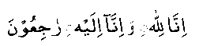

Hadhrat Abu-Jahm-bin-Huzaifah (RA) narrates:
"During the battle of Yarmuk, I went out in search of my cousin, who was in the forefront of the fight. I also took some water with me for him. I found him in the very thick of battle, in the last throes of death. I advanced to help him with the little water I had, but as I reached him, another sorely wounded soldier beside him gave a groan. My cousin turned his face and indicated to me to take the water to that person first.
I went to this other person with the water. He turned out to be Hishaam bin Abil Aas (RA), but I had hardly reached him, when I heard the groan of yet another person lying not very far off. Hisham (RA) motioned me in his direction. Unfortunately, before I could approach him, he had breathed his last. I hurried back to Hishaam (RA) and found him dead as well. Thereupon, I hurried as fast as I could to my cousin and in the meantime he had also joined the other two (ie. He had also passed away).

Many incidents of such self-denial and heroic sacrifice is recorded in the books of Hadith. This is the height of self-sacrifice, that each dying person should forego quenching his own thirst in favour of his other needy brother. May Allah Ta’ala bless their souls with His choicest favours for their sacrifice for others, even at the time of death, when a person very seldom has the sense to make a choice.